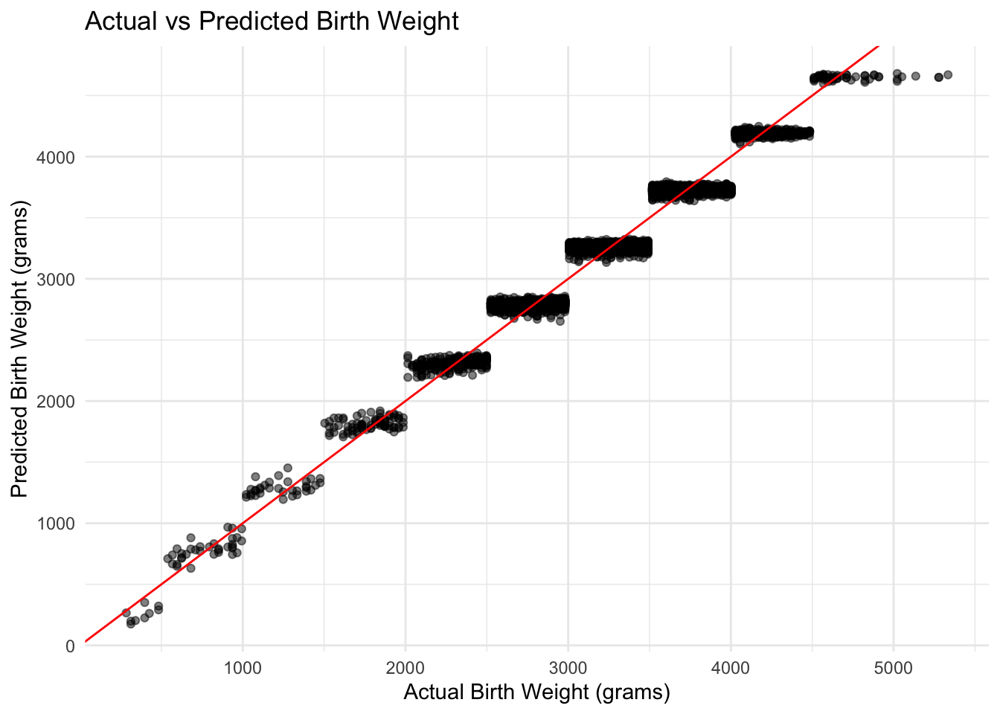

Warning in births$Birth.Weight..g - test_pred: longer object length is not a
multiple of shorter object length
cat("Training MSE:", train_mse, "\n")
Training MSE: 721481.8
cat("Testing MSE:", test_mse)
Testing MSE: 710234.1
# The training MSE is higher than the testing MSE, which rarely occurs because the model is fit to the training data. The significant predictors are Plurality.of.birth, Gender, RaceWhite, Date.LBirth, Month.LBirth, Weeks, Birth.weight.group, Month.Term, Low.BirthNorm, SmokerNo, and Wt.Gain.
Warning in births$Birth.Weight..g. - step_test_pred: longer object length is
not a multiple of shorter object length
cat("Training MSE:", step_train_mse, "\n")
Training MSE: 721443.2
cat("Testing MSE:", step_test_mse)
Testing MSE: 709755.3
c.
Ridge regression with the complete data (births)
# Prepare the databirthsLog <-transform(births, lWeight =log(as.numeric(births$Birth.Weight..g.)))birthsLog <-subset(birthsLog, select =-c(Birth.Weight..g., X))B.testLog <-transform(B.test, lWeight =log(as.numeric(B.test$Birth.Weight..g.)))B.testLog <-subset(B.testLog, select =-c(Birth.Weight..g., X))births2 <-na.omit(birthsLog)B.test2 <-na.omit(B.testLog)x_full <-model.matrix(lWeight ~ ., data = births2)y_full <- births2$lWeightx_test <-model.matrix(lWeight ~ ., data = B.test2)y_test <- B.test2$lWeight# Fit Ridge Regressionset.seed(705780612)lambda.v <-10^seq(10, -2, length =100)ridge_model <-glmnet(x_full, y_full, alpha =0, lambda = lambda.v)# Cross-validation to find best lambdaset.seed(12)cv.output <-cv.glmnet(x_full, y_full, alpha =0)qplot <-qplot(log(cv.output$lambda),cv.output$cvsd)
Warning: `qplot()` was deprecated in ggplot2 3.4.0.
bestlamb.cv <- cv.output$lambda.min# Fit the model with the best lambdabest_ridge <-glmnet(x_full, y_full, alpha =0, lambda = bestlamb.cv)# Predictionspred.births2 <-predict(best_ridge, newx = x_full, s = bestlamb.cv, type ="response")pred.Btest2 <-predict(best_ridge, newx = x_test, s = bestlamb.cv, type ="response")# Calculate MSEMSE.births2 <-mean((y_full - pred.births2)^2) # Training MSEMSE.Btest2 <-mean((y_test - pred.Btest2)^2) # Testing MSEcat("Best lambda: ", bestlamb.cv, "\n")
# The significant predictors are variables like Low.BirthNorm, Birth.weight.group, and Weeks, as they have large coefficients and strong associations to the response. For example, the Weeks coefficient is large (1.828815e-02) compared to others, indicating a strong effect on the response variable. An interesting observation is that AveCigs shows a negative relationship with the response, and SmokerNo has a positive association. The training MSE is 0.0067214 and the testing MSE is 0.0069423, which indicates good model performance and overfitting because the testing MSE is very close to the training MSE.
d.
Use Lasso Regression Approach to predict the weight of the baby in grams using the complete data (births) and interpret your results
#The Lasso regression model has a lower MSE than the linear model (by about 0.003), which shows that the shrinkage technique in Lasso regression can improve model generalization while preventing overfitting. # Also, the Cross-Validation Error vs Lambda plot shows the error increasing rapidly as the log of lambda moves from -4 to 0.
The multiple linear regression model uses all predictors, resulting in high bias and less flexibility, with training and testing MSE values of 721256.4 and 707930.6, respectively.
The stepwise regression model, selecting 8 predictors, has only a slightly better MSE (721443.2 and 709755.3) respectively.
Ridge regression, with a lambda of 0.00224, after a log transformation, achieves a training MSE of 0.006721434 and a testing MSE of 0.006942309 by applying penalties to predictors, balancing bias and flexibility. These MSE are better that what was shown in stepwise.
The Lasso model, with similar performance (training MSE: 0.00642802, Testing MSE: 0.006628631), further reduces predictors, offering higher flexibility and lower variance.
Based on the MSE values, Lasso Regression appears to be the best model. It has the lowest MSE on both the training (0.00642802) and testing sets (0.006628631), suggesting a good balance between bias and variance.
2
Write a short paragraph comparing these approaches in terms of their final number of predictors, their bias and their flexibility.
Ridge and Lasso regression handle regularization differently. Ridge reduces the size of all coefficients but keeps them in the model, which is great for handling multicollinearity and balancing bias and variance. Lasso can shrink some coefficients to zero, which removes less important predictors and making the model simpler. Ridge is better when you have many small, correlated effects, while Lasso works well when you want to focus on just the key predictors.
a.
Fit a PCR model on the training set, with M principal components chosen by cross validation. Report the MSE obtained using both data sets (training and testing). along with the value of M principal components selected by cross-validation. Report the amount of variation explained in the X matrix by those M principal component.
# choose 40 principle components based on analysis of summary of pcr model# amount of variation explained by 40 principal components: 99.37% (also from pcr model analysis)# Check to see the optimal M and the amount of variationoptimal_M <-which.min(pcrmodel$validation$PRESS)# Test modeltrain_predictions <-predict(pcrmodel, newdata = B.train, ncomp = optimal_M)MSE.Btrain <-mean((B.train$Birth.Weight..g. - train_predictions)^2)test_predictions <-predict(pcrmodel,newdata = B.test , ncomp = optimal_M)MSE.Btest <-mean((B.test$Birth.Weight..g. - test_predictions)^2)cat("Optimal M:", optimal_M, "\n")
Optimal M: 40
#cat("Amount of Variance explained by the optimal M:", explained_variance, "\n")cat("Training MSE:", MSE.Btrain, "\n")
Training MSE: 18709.24
cat("Testing MSE:", MSE.Btest, "\n")
Testing MSE: 19207.04
# The validation plot is a visualization for the optimal M by showing that the RMSEP is lowest beginning at around 38.
b.
Fit a PLS model on the training set, with M principal components chosen by cross validation. Report the MSE obtained using both data sets (training and testing), along with the value of M principal components selected by cross-validation. Report the amount of variation explained in the X matrix by those M principal component. Note: Use 85% as your threshold for the amount of variation in the X matrix
# choose 10 principal components (from summary analysis)# amount of variation explained by 10 principal components: 94.99%# Check to see the optimal M and the amount of variationoptimal_M <-which.min(plsmodel$validation$PRESS)explained_variance <-cumsum(explvar(plsmodel))train_predictions <-predict(plsmodel, newdata = B.train, ncomp = optimal_M)MSE.Btrain <-mean((B.train$Birth.Weight..g. - train_predictions)^2)test_predictions <-predict(plsmodel,newdata = B.test , ncomp = optimal_M)MSE.Btest <-mean((B.test$Birth.Weight..g. - test_predictions)^2)cat("Optimal M:", optimal_M, "\n")
Optimal M: 10
#cat("Amount of Variance explained by the optimal M:", explained_variance, "\n")cat("Training MSE:", MSE.Btrain, "\n")
Training MSE: 18701.52
cat("Testing MSE:", MSE.Btest, "\n")
Testing MSE: 19238.18
# The validation plot is a visualization for the optimal M by showing that the RMSEP is lowest beginning at a little before 10.
c.
Fit a GAM on the training data, using “the weight of the baby in grams” as the response and the features selected in the previous step BIC function (Question 1 Part b) as your predictors. Plot the results, and explain your findings.
# Unfortunately, I've run into errors with the plot function.B.train$Predicted <-predict(gammodel, newdata = B.train)ggplot(B.train, aes(x = Birth.Weight..g., y = Predicted)) +geom_point(alpha =0.5) +geom_abline(slope =1, intercept =0, color ="red") +theme_minimal() +labs(title ="Actual vs Predicted Birth Weight",x ="Actual Birth Weight (grams)",y ="Predicted Birth Weight (grams)")

The actual vs. predicted weights plot shows that the GAM model fits the training data very well. It accurately predicts the baby weights given the significant predictors chosen from the step BIC function. Also, the training and testing MSE are relatively close and does not overfit. The testing MSE is higher than the training, as expected.
d.
Evaluate the model obtained on the testing data set, and explain the results obtained.
The GAM model fits the data very well with a high r squared, and the the model does not overfit as the testing MSE is similar to the training MSE and does not overfit. The testing MSE is higher than the training, as expected.
e.
For which of the predictor variables in part c, if any, an evidence of a non-linear relationship with the response variable?
“Weeks” shows evidence of a moderate non-linear relationship with birth weight. “Wt.Gain” shows a weak non-linear relationship, suggesting it is closer to linear but not completely. They both have p-values less than 0.05, suggesting that there is evidence for a non-linear relationship between the variables.